Wielrennen
Tijdens de fietstrainingen als shorttracker probeerde ik regelmatig een
Strava KOM te pakken en het leek me erg leuk om ook ooit eens wedstrijden te gaan rijden. De fiets is een mooi product dat bijdraagt aan een goed milieu en gezonde mensen.
Ik vind het heerlijk om samen met een groep op pad te gaan en nieuwe wegen te ontdekken. Daniël Lohues beschrijft dit gevoel mooi in het nummer
Op Fietse. Voor fietsers heb ik de
CyclingCalc app gemaakt met daarin een aantal handige rekentools.
Toen ik stopte met shorttrack heb ik een wielerlicentie genomen en bij de amateurs pakte ik een aantal overwinningen. Na winst op het Districtkampioenschap in Gieten werd ik uitgenodigd door
Cycling Team Fryslan om driedaagse Giro delle Miniere te rijden in Sardinië.
In deze koers won ik een etappe en en het eindklassement. Hierna heb ik de overstap gemaakt naar de Elite en ben ik bij Cycling Team Fryslan gaan koersen. We hebben een mooie ploeg en rijden op de Friese fietsen van
14Carbon.
Iedere koers is weer totaal anders door het parcours, de omstandigheden en de deelnemers en dat maakt dat iedere koers een verhaal heeft. Hierover schrijf ik meestal een kort verslagje op Strava. In mijn eerste seizoen reed ik twee maal podium bij de Elite en in mijn tweede seizoen won ik in Roden, Bedum en Zevenhuizen met mooi teamwork.


